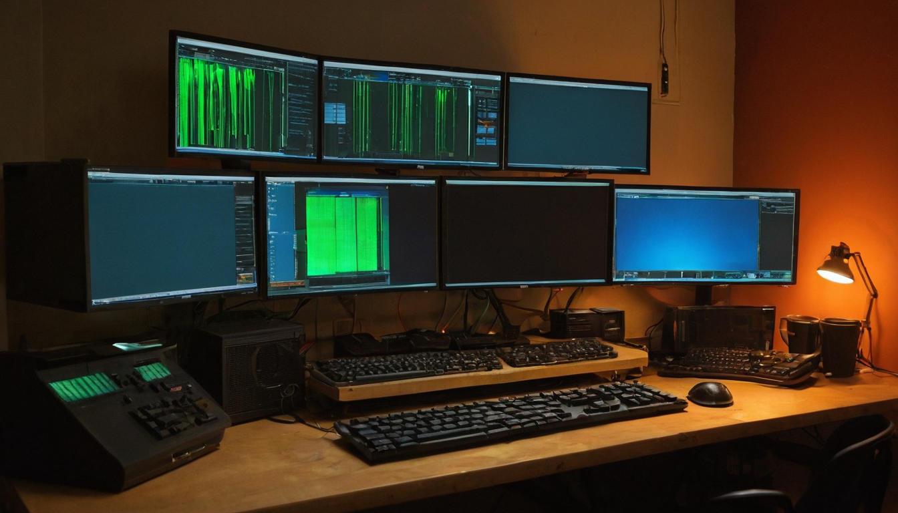

There is a specific kind of satisfaction that only comes from building something real and then watching it actually work. @OrangeGooey put that feeling into about thirty words on X this week.
[hero image]
Originally shared by @OrangeGooey on X, the post is a quick look at a stack they have been building, paired with a screenshot of what it does. The observation: projects raising millions from venture capital and retail investors are often delivering only a fraction of what this builder has already put together. And the community around them gets the whole thing for free.
That is worth slowing down on.
@OrangeGooey posted a brief reflection alongside what appears to be a screenshot of their stack in action. The text does not name specific tools or competing projects, but the framing is clear: somewhere out there, funded teams are burning through investment to build something this builder has already shipped. The people in their circle get access to it without paying for any of it.
There are no external links in the post itself, so the specifics of the stack are not public from this source alone. But the sentiment carries its own weight.
The VC model for software tends to follow a familiar arc. Someone spots a real problem, raises money to build around it, scales the team, and charges for access to cover the burn rate. Retail investors in crypto-adjacent projects fund a similar cycle, just with tokens instead of equity. Both models have produced real tools.
Meanwhile, builders embedded in actual communities, building for people they know, often ship faster and much closer to the real need. They do not have a board to impress or a token price to defend. They are solving a specific problem for a specific group of people, and when they solve it, they share it.
That is what this post is pointing at. The community here gets what the builder put together, without a paywall or a token gate in the way.
[explainer image]
What this represents for builders is not complicated, but it is worth naming clearly.
What it does: A bootstrapped or community-built stack covering ground that funded projects are still trying to reach. The specifics are not public from this post alone, but the framing matters. @OrangeGooey is comparing this to what real money has funded, not describing a side project or an early prototype.
Who it helps: The community around @OrangeGooey. That is the "gang gets it for free" line. Free does not mean valueless here. It means the builder decided their community does not need to pay for something they built together, for the community.
Why builders should care: This pattern shows up more often than the press covers. The best tools in a lot of niches, especially smaller or faster-moving ones, come from people already inside those communities, not from funded startups trying to find product-market fit. The funding usually follows the insight, not the other way around.
What still needs work: Without more detail from the post, it is hard to say what gaps remain in the stack. The screenshot suggests something is working. That is enough to pay attention to.
What to look for next: Whether @OrangeGooey publishes more detail, documents the stack, or opens it up further. Posts like this sometimes grow into something much larger.
I love seeing posts like this. Not because they score points against funded projects, but because they are a genuine moment of "we actually built this." That is rare to share publicly, and it is worth stopping on.
The builder communities I follow have more people like this than outsiders realize. People who have been working on problems for a long time, quietly, and who at some point look up and find they have something that actually works. The community gets the benefit because the builder is part of the community. That is how it is supposed to go.
I cannot tell from this post exactly what the stack does. But the energy behind it is unmistakable. This is someone who earned the right to smile at what they built.
Follow @OrangeGooey for more context on the stack. If they open-source it or write it up, that would be worth reading carefully. The "millions raised for one third of this solution" framing is a strong claim in a short post, and the full picture would be worth seeing if they share it.
The broader pattern is worth watching too. Community-built tools in fast-moving niches keep outpacing what funded alternatives deliver, at least at the layer where real users live. This post is one more data point in that trend.
Source: X post by @OrangeGooey, https://x.com/i/web/status/2078504085448245747, retrieved 2026-07-18.
No external links were included in the source post.